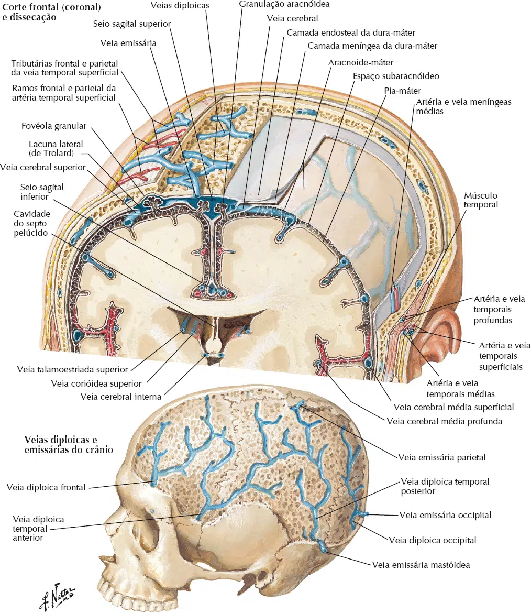
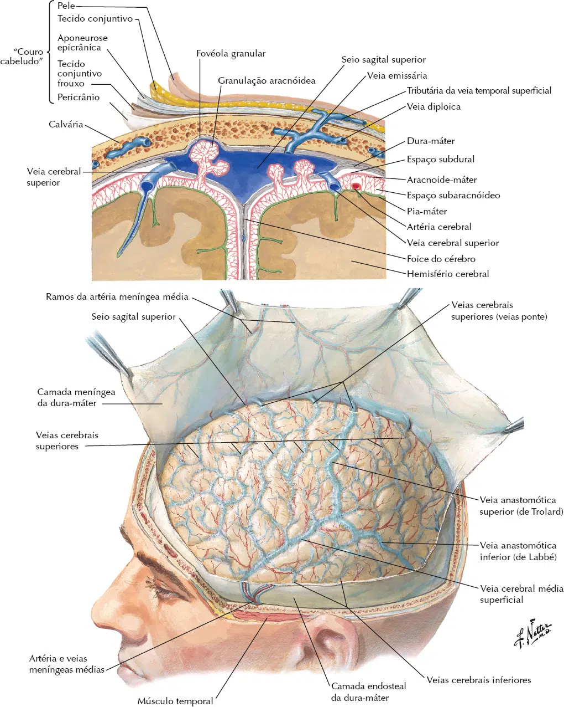
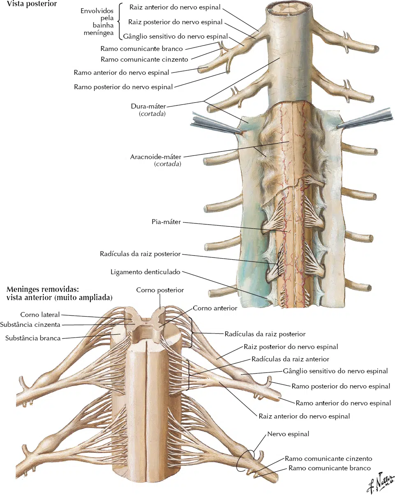

As meninges são formadas por tecido conjuntivo, revestem a parte central do sistema nervoso.
São três camadas meníngeas:
Dura-máter (externa), aracnóide-máter (intermédia) e a pia-máter (interna).
As três meninges são encontradas revestindo do encéfalo e a medula espinal, contudo, a disposição delas é diferente quando revestem o encéfalo e a medula espinal.
A dura-máter é denominada de paquimeninge (paqui – espessa, dura).
A aracnoide-mater e a pia-máter são as leptomeninges (lepto – delgado).

Parte encefálica das meninges
Dura-máter: apresenta dois folhetos, um interno e outro externo.
O folheto externo da dura-máter reveste a cavidade craniana, não existindo espaço entre a dura-máter e o crânio.
Esse folheto forma o periósteo (sem a propriedade osteogênica).
O folheto interno forma projeções, denominadas de pregas da dura-máter.
As pregas da dura-máter são: a foice do cérebro (septo de conjuntivo que ocupa a fissura longitudinal do cérebro), a foice do cerebelo (septo entre os hemisférios cerebelares), o tentório do cerebelo (septo que separa o lobo occipital do cerebelo), e o diafragma da sela (pequena prega que reveste superiormente a hipófise).
Entre os folhetos da dura-máter se formam canais venosos para a drenagem do encéfalo (os seios de dura-máter são descritos no capítulo de vascularização do sistema nervoso).
O tentório do cerebelo apresenta em sua margem anterior uma incisura, permitindo a comunicação do mesencéfalo com o diencéfalo.
A área abaixo do tentório do cerebelo é denominada de compartimento infratentorial (contendo o tronco encefálico e o cerebelo), a área acima é o compartimento supratentorial (contendo o cérebro).
Aracnóide-máter: está separada da dura-máter pelo espaço subdural (que contém uma quantidade capilar de líquido cerebrospinal) e, separada da pia-máter pelo grande espaço subaracnóideo (com considerável quantidade de líquido cerebrospinal).
A distância entre a aracnóide-máter e a pia-máter pode variar na cavidade craniana, em alguns pontos a distância aumenta consideravelmente, formando as cisternas aracnóideas.
A cisterna mais importante é a cisterna magna, localizada entre a face inferior do cerebelo e a face posterior do bulbo.
Na superfície da aracnóide-máter são encontradas as granulações aracnóideas, responsáveis pela absorção do líquido cerebrospinal.
Pia-máter: reveste a superfície do encéfalo, os vasos saguíneos ficam superficialmente a pia-máter.
Não existe espaço entre o tecido nervoso e a pia-máter.

Parte espinal das meninges
Revestindo a medula espinal as meninges se dispõem formando espaços.
A dura-máter não está em contato com as vértebras, desta forma, forma-se o espaço extradural (epidural), contendo gordura e o plexo venoso vertebral interno.
Entre a dura-máter e a aracnóide-máter está localizado o espaço subdural (que contém quantidade capilar de líquido cerebrospinal, mantendo adesão entre as meninges).
Entre a aracnóide-máter e a pia-máter está o espaço subaracnóideo, que se comunica com o espaço subaracnóideo encefálico.
Abaixo do cone medular a distância entre a pia-máter e a aracnóide-mater aumenta, formando a cisterna lombar.
A pia-máter reveste a superfície da medula espinal e não há formação de espaço entre elas.
